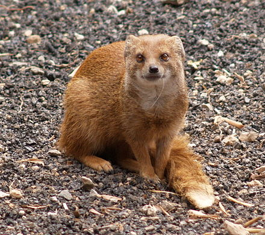
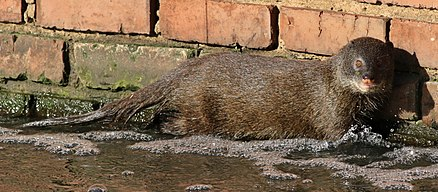
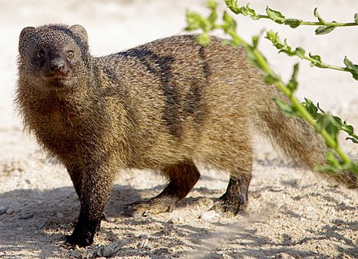

Mongeese: The Where And The What
Table of Contents
A mongoose is a small terrestrial carnivorous mammal belonging to the family Herpestidae. This family is currently split into two subfamilies, the Herpestinae and the Mungotinae. The Herpestinae comprises 23 living species that are native to southern Europe, Africa and Asia, whereas the Mungotinae comprises 11 species native to Africa.
Characteristics of Mongeese
Mongooses have long faces and bodies, small, rounded ears, short legs, and long, tapering tails. Most are brindled or grizzly; a few have strongly marked coats which bear a striking resemblance to mustelids. Their nonretractile claws are used primarily for digging. Mongooses, much like goats, have narrow, ovular pupils.
Mongooses are one of at least four known mammalian taxa with mutations in the nicotinic acetylcholine receptor that protect against snake venom. Their modified receptors prevent the snake venom α-neurotoxin from binding. These represent four separate, independent mutations. In the mongoose, this change is effected, uniquely, by glycosylation.
Where are they located?
(Fig. 1) Mongeese are found in sub-Saharan Africa and South Asia.
Diet
Mongooses mostly feed on insects, crabs, earthworms, lizards, birds, and rodents. However, they also eat eggs and carrion.
Some species can learn simple tricks. They can be semi-domesticated and are kept as pets to control vermin.Cultural Significance of the Mongoose
In ancient Mesopotamia, mongooses were sacred to the deity Ninkilim, who was conflated with Ningirama, a deity of magic who was invoked for protection against serpents. According to a Babylonian popular saying, when a mouse fled from a mongoose into a serpent's hole, it announced, "I bring you greetings from the snake-charmer!" A creature resembling a mongoose also appears in Old Babylonian glyptic art, but its significance is not known.
All mongoose species, except for Suricata suricatta, are classed as a "prohibited new organism" under New Zealand's Hazardous Substances and New Organisms Act 1996, preventing them from being imported into the country.
A well-known fictional mongoose is Rikki-Tikki-Tavi, who appears in a short story of the same title in The Jungle Book (1894) by Rudyard Kipling. In this tale set in India, a young pet mongoose saves his human family from a krait and from Nag and Nagaina, two cobras. The story was later made into several films and a song by Donovan, among other references. A mongoose is also featured in Bram Stoker's novel The Lair of the White Worm. The main character, Adam Salton, purchases one to independently hunt snakes. Another mongoose features in the denouement of the Sherlock Holmes story "The Adventure of the Crooked Man", by Sir Arthur Conan Doyle. The Indian Tamil devotional film Padai Veetu Amman shows Tamil actor Vinu Chakravarthy changing himself into a mongoose by using his evil tantric mantra, to fight the goddess Amman. However, the mongoose finally dies at the hands of the goddess.
Mongoose species are prohibited to be kept as pets in the United States.
Rating the Cuteness of Mongeese
| Species | Reference Image | Rating (out of 10) |
|---|---|---|
| Yellow Mongoose |  | 10 |
| Marsh Mongoose |  | 8 |
| Egyptian mongoose |  | 6 |
Give us some feedback!
Data sourced from Wikipedia